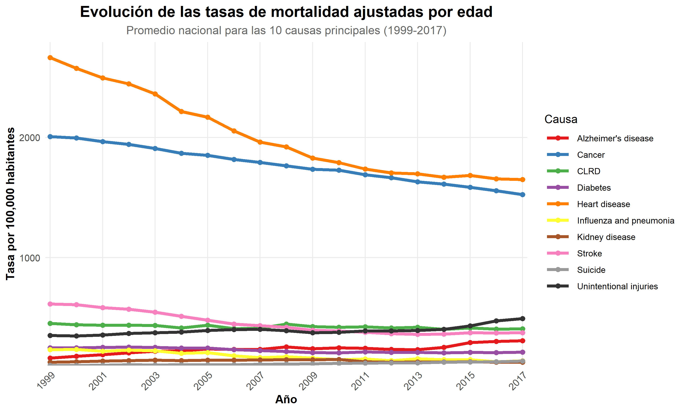

3 Metodología
El presente estudio corresponde a un análisis exploratorio de datos (EDA) de corte longitudinal, basado en registros administrativos de mortalidad en Estados Unidos durante el periodo 1999–2017. El enfoque metodológico combina estadística descriptiva, análisis de series de tiempo y modelado predictivo.
3.1 Fuente de datos y preprocesamiento:
El conjunto contiene registros anuales de mortalidad por causa y estado, incluyendo la tasa ajustada por edad (age-adjusted death rate), que estandariza las tasas eliminando el efecto de diferencias en la estructura etaria entre poblaciones, permitiendo comparaciones entre estados y años.
El preprocesamiento incluyó estandarización de nombres de variables, corrección de formatos numéricos inconsistentes, conversión de tipos de datos y filtrado del periodo 1999–2017.
3.2 Estadística descriptiva:
Como punto de partida se construyeron diagramas de barras comparativos para analizar la distribución porcentual de las causas de muerte de 1999 - 2017 y gráficos de líneas para identificar la evolución temporal de las tasas ajustadas por causa a nivel nacional. Estas visualizaciones permiten detectar tendencias, cambios en el ranking de causas y variaciones en la carga relativa de cada enfermedad a lo largo del período.
3.3 Análisis de series de tiempo:
Se aplicaron las siguientes técnicas para evaluar el comportamiento temporal de las series de mortalidad:
Estacionariedad: Se evaluó mediante la prueba de Dickey-Fuller Aumentada (ADF), cuya hipótesis nula establece que la serie tiene raíz unitaria (no estacionaria). Un valor p < 0.05 indica estacionariedad, requisito para la aplicación de modelos ARIMA.
ACF y PACF: Se analizaron las funciones de autocorrelación (ACF) y autocorrelación parcial (PACF) para identificar patrones de dependencia temporal y orientar la selección de parámetros del modelo.
3.4 Análisis geográfico:
Se calcularon tasas ajustadas promedio por estado para identificar
disparidades territoriales. Se construyeron mapas coropléticos
interactivos con leaflet y visualizaciones comparativas de los
estados con mayor y menor carga de mortalidad, consistente con el
gradiente geográfico documentado en la literatura.
3.5 Modelo predictivo – ARIMA:
Para proyectar tendencias futuras se implementó un modelo ARIMA(p,d,q), definido por tres parámetros: orden autoregresivo (p), el grado de diferenciación (d) y el orden de media móvil (q). La selección de parámetros óptimos se realizó mediante el criterio de información de Akaike (AIC). La validación se realizó mediante análisis de residuos y la prueba de Ljung-Box, cuya hipótesis nula establece independencia de los residuos un p-value > 0.05 confirma que el modelo no dejó estructura sin capturar. Las proyecciones cubren 2018–2022 para West Virginia.
3.6 Herramientas Computacionales
# librerías necesarias
library(tidyverse)
library(skimr)
library(janitor)
library(RColorBrewer)
library(viridis)
library(patchwork)
library(scales)
library(knitr)
library(usmap)
library(grid)
library(leaflet)
library(dplyr)
library(tidyr)
library(htmltools)
library(tigris)
library(sf)
library(ggplot2)
library(htmlwidgets)El procesamiento y análisis de los datos se realizó utilizando el lenguaje de programación R (versión 4.4.1) y el entorno de desarrollo RStudio. Las principales librerías empleadas fueron:
tidyverse: para manipulación, transformación y visualización de datos.skimr: para resúmenes descriptivos rápidos.janitor: para limpieza de nombres de columnas.RColorBreweryviridis: para paletas de colores en visualizaciones.patchwork: para combinar múltiples gráficos.scales: para formateo de ejes numéricos.usmap: para la creación de mapas coropléticos.grid.: sistema gráfico subyacente en R;gridExtraproporciona funciones para organizar múltiples gráficos en una cuadrícula, comogrid.arrange().leaflet: para crear mapas interactivos con zoom, capas y ventanas emergentes.dplyr: para manipulación de datos (filtrar, seleccionar, agrupar, resumir, etc.).tidyr: para ordenar y transformar datos entre formato ancho y largo. htmltools: para generar y manipular código HTML desde R, útil en widgets y etiquetas.tigris: para descargar y manejar datos geoespaciales de EE.UU. (límites de estados, condados, etc.).sf: para trabajar con datos espaciales (simple features) y realizar operaciones geométricas.htmlwidgets: para utilizar widgets de JavaScript (como leaflet, plotly, DT) en R y documentos R Markdown.
3.7 Carga y limpieza de datos
datos <- datos %>% clean_names()
datos <- datos %>%
mutate(
anio = as.numeric(year),
causa = cause_name,
estado = state,
muertes = as.numeric(gsub(",", "", deaths)),
tasa_ajustada = as.numeric(gsub(",", ".", age_adjusted_death_rate))
) %>%
filter(
estado == "United States",
anio >= 1999 & anio <= 2017
) %>%
select(anio, causa, muertes, tasa_ajustada)
totales_anuales <- datos %>%
filter(causa == "All causes") %>%
select(anio, muertes)
cat("\nTotales nacionales por año:\n")##
## Totales nacionales por año:## # A tibble: 19 × 2
## anio muertes
## <dbl> <chr>
## 1 2014 <NA>
## 2 2016 <NA>
## 3 2017 <NA>
## 4 2013 <NA>
## 5 2012 <NA>
## 6 2015 <NA>
## 7 2011 <NA>
## 8 2010 <NA>
## 9 2009 <NA>
## 10 2008 <NA>
## 11 2007 <NA>
## 12 2006 <NA>
## 13 2004 <NA>
## 14 2005 <NA>
## 15 2003 <NA>
## 16 2002 <NA>
## 17 2001 <NA>
## 18 2000 <NA>
## 19 1999 <NA>totales_causa <- datos %>%
filter(causa != "All causes") %>%
group_by(causa) %>%
summarise(
total_1999_2017 = sum(muertes, na.rm = TRUE),
.groups = "drop"
) %>%
arrange(desc(total_1999_2017))
cat("\nTotal acumulado por causa (1999–2017):\n")##
## Total acumulado por causa (1999–2017):## # A tibble: 10 × 2
## causa total_1999_2017
## <chr> <chr>
## 1 Heart disease 12,223
## 2 Cancer 10,844
## 3 Stroke 2,727
## 4 CLRD 2,595
## 5 Unintentional injuries 2,348
## 6 Alzheimer's disease 1,495
## 7 Diabetes 1,400
## 8 Influenza and pneumonia 1,095
## 9 Kidney disease 859
## 10 Suicide 697datos_comp <- datos %>%
filter(anio %in% c(1999, 2017),
causa != "All causes") %>%
group_by(anio) %>%
mutate(
total_anual = sum(muertes),
porcentaje = (muertes / total_anual) * 100
) %>%
ungroup()
orden_causas <- datos_comp %>%
filter(anio == 2017) %>%
arrange(desc(porcentaje)) %>%
pull(causa)
datos_comp$causa <- factor(datos_comp$causa, levels = orden_causas)
ggplot(datos_comp, aes(x = causa,
y = porcentaje,
fill = factor(anio))) +
geom_col(position = position_dodge(width = 0.8)) +
geom_text(aes(label = paste0(round(porcentaje,1), "%")),
position = position_dodge(width = 0.8),
hjust = -0.2,
size = 3) +
coord_flip() +
scale_y_continuous(labels = function(x) paste0(x, "%"),
expand = expansion(mult = c(0, 0.1))) +
scale_fill_brewer(palette = "Blues") +
labs(title = "Comparación porcentual de muertes por causa",
subtitle = "1999 vs 2017 – Total Nacional",
x = "Causa de muerte",
y = "Porcentaje del total anual",
fill = "Año") +
theme_minimal(base_size = 12)
Interpretación: El gráfico muestra cómo han cambiado las principales causas de muerte entre 1999 y 2017 mientras enfermedades como suicidio, diabetes, enfermedad renal y respiratorias crónicas bajaron en proporción, otras como influenza, neumonía, accidentes, derrames cerebrales y especialmente Alzheimer aumentaron, reflejando el impacto del envejecimiento poblacional; cáncer se mantuvo estable alrededor del 29%, pero las enfermedades cardíacas crecieron fuertemente de 31.1% a 38.1%, consolidándose como la principal causa de muerte en 2017.
3.8 Variables del Dataset
El dataset original contiene las siguientes variables:
| Columna original | Descripción | Nombre en el análisis | Tipo de dato |
|---|---|---|---|
| Year | Año de registro de la defunción | anio | Numérico (entero) |
| 113 Cause Name | Código de la causa según ICD-10 | causa_codigo | Texto |
| Cause Name | Nombre descriptivo de la causa de muerte | causa | Texto |
| State | Estado de residencia del fallecido | estado | Texto |
| Deaths | Número de muertes | muertes | Numérico (entero) |
| Age-adjusted Death Rate | Tasa de mortalidad ajustada por edad (por 100,000 habitantes) | tasa_ajustada | Numérico continuo (double) |
Para facilitar el análisis, las variables fueron renombradas en el
entorno de trabajo
como: anio, causa_codigo, causa, estado, muertes y tasa_ajustada.
No se incluyen variables demográficas como sexo o grupo etario, por lo
que el análisis se centra en las dimensiones temporal, geográfica y de
ranking.